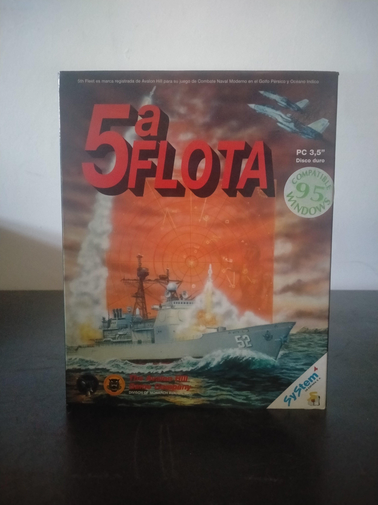

Ficha #000119
5ª Flota
5ª Flota es la edición española de 5th Fleet, wargame naval moderno publicado por The Avalon Hill Game Company y ambientado en un hipotético conflicto en el Golfo Pérsico y el Océano Índico. El juego sitúa al jugador al mando de fuerzas aeronavales contemporáneas, con unidades de superficie, submarinos, aviación embarcada, bombarderos, interceptores y misiles, dentro de una simulación operacional centrada en control marítimo, superioridad aérea, detección radar, ataques de largo alcance y toma de decisiones estratégicas. La edición destaca por adaptar al PC la tradición de los wargames complejos de Avalon Hill, incorporando escenarios, juego contra la IA, partidas entre jugadores y soporte para juego por e-mail, una característica avanzada para mediados de los noventa. Esta versión física española en caja grande para PC 3,5 pulgadas, distribuida por System 4 de España, conserva especial interés documental por su localización al castellano, su soporte en disquetes y su compatibilidad declarada con Windows 95.
- Formato
- Big Box
- Plataforma
- MsDos Win95
- Género
- Wargame Estrategia naval Simulación naval Estrategia por turnos Simulación bélica
- Serie
- Todos Big Box
- Desarrollador
- Stanley Associates
- Distribuidor
- The Avalon Hill Game Company, System 4 de España
- EAN
- —
Contenido de la edición
- Caja Big Box
- Manual en castellano
- Cuaderno o documentación adicional
- 5 disquetes de 3,5 pulgadas
Preservación
- Protección
- No determinado
- Formato recomendado
- Otro
- Jugable en virtualización
- Sí
Edición en disquetes de 3,5 pulgadas. Para preservación se recomienda realizar imagen individual de cada disquete, documentar la numeración y etiquetas de los discos, verificar la instalación en entorno MS-DOS o Windows 95 virtualizado y conservar digitalizada la documentación en castellano por su valor operativo y archivístico. No hay evidencia suficiente para confirmar un sistema anticopia concreto en la edición mostrada.